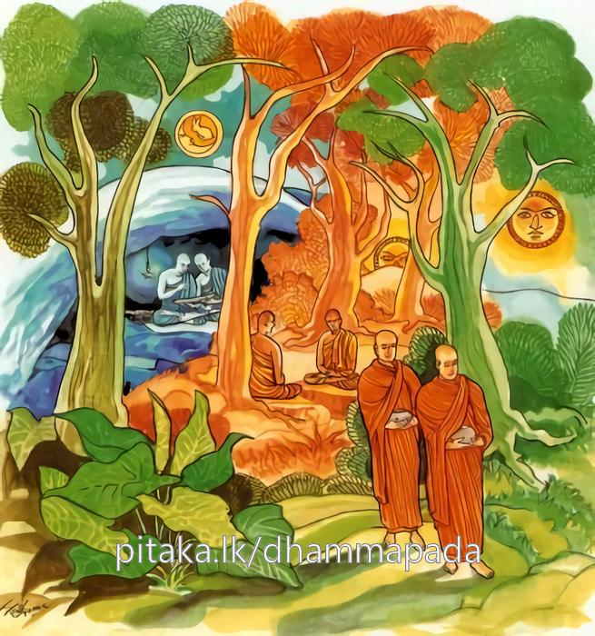
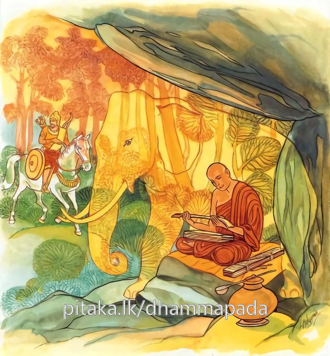
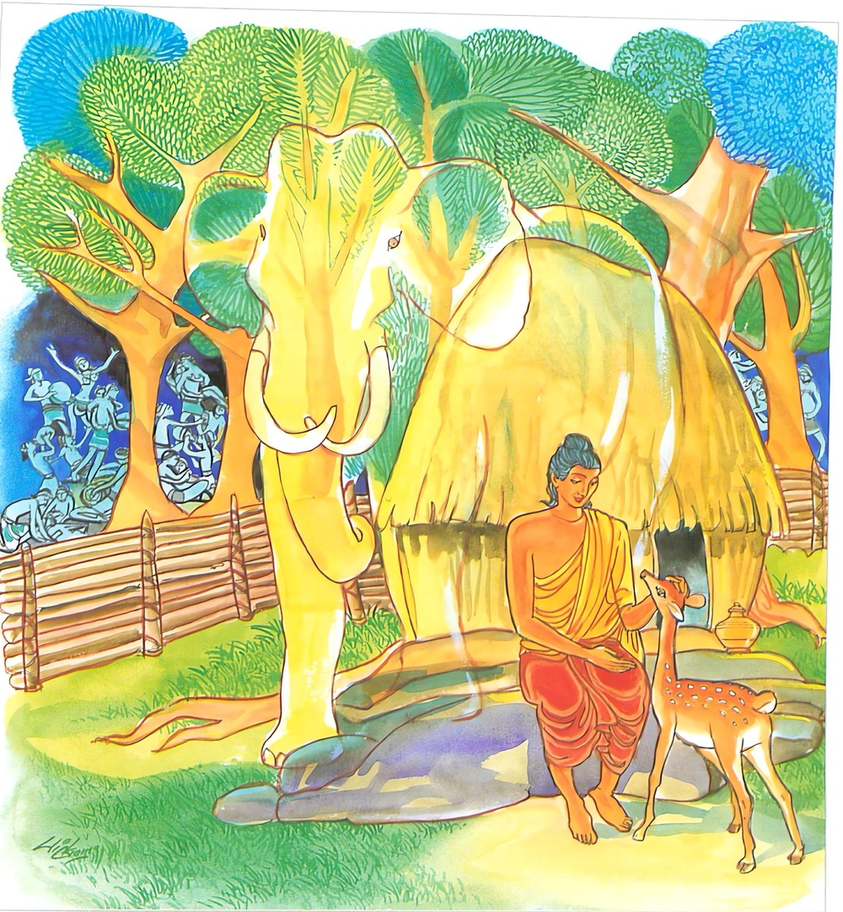

23-7 පාරිලෙය්යක ඇතා
මෙම කතාව ධම්මපද අටුවාවෙන් ද කියවන්න.
සචෙ ලභෙථ නිපකං සහායං
සද්ධිං චරං සාධු විහාරි ධීරං
අභිභුය්ය සබ්බානි පරිස්සයානි
චරෙය්ය තෙනත්තමනො සතීමා.
ප්රඥාව ඇති, තමා හා සමග වසන්නට නිසි, යහපත් වාස ඇති, ධෘතිසම්පන්න, කල්යාණ මිත්රයකු ඉදින් ලද්දේ වී නම්, සියලු උපද්රව තාක් මැඩ, ඔහු හා සතුටු සිතැති වැ සිහි නුවණින් යෙදී වසන්නේ ය.

නො චෙ ලභෙථ නිපකං සහායං
සද්ධිං චරං සාධු විහාරි ධීරං
රාජා’ව රට්ඨං විජිතං පහාය
එකො චරෙ මාතඞ්ගරඤ්ඤෙ’ව නාගො.
ප්රඥාව ඇති, තමා හා සමග වසන්නට නිසි, යහපත් වාස ඇති, ධෘතිසම්පන්න, කල්යාණමිත්රයකු ඉදින් නො ලද්දේ වී නම්, දිනන ලද (අතට පත්) රට හැර පියා එකලා වැ වනයට වැද තවුස් පැවිද්ද ගත් මහාජනක රජු මෙන් ද, (ඇත්මුළ හැර පියා) රක්ෂිත වනයෙහි (හුදෙකලාවැ වසන) මාතඞ්ග ඇතු මෙන් ද, ගණයා හැර එකලා වැ වසන්නේය.

එකස්ස චරිතං සෙය්යො
නත්ථි බාලෙ සහායතා
එකො චරෙ න ච පාපානි කයිරා
අප්පොස්සුක්කො මාතඞ්ගරඤ්ඤෙව නාගො.
එකලාහුගේ වාසය උතුමි. (දෙලෝ වැඩ නොදක්නා) අනුවණයා කෙරෙහි (ශීල ධූතාංග විදර්ශනා මාර්ගඵල ත්රිවිද්යා අභිඥා නිර්වාණ යන මේ) සහාය බව නැත. (ඔහු නිසා එය ලැබිය නො හැක්ක.) එ හෙයින් ගණයා හැර එකලා වැ වසන්නේ ය. මඳ වූ ද පව් නො ම කරන්නේ ය. ගණයා හැර වෙනෙහි වසන මාතඞ්ග (පාරිලෙය්යක) ඇතු මෙන් (ගණ පරිහරණයෙහි) නිරුත්සාහ වැ වසන්නේ ය.

පාරිලෙය්යක මහා ඇතුගෙන් උවැටන් ලබමින් බුදුරජානන් වහන්සේ පාරිලෙය්යක වනයෙහි වැඩ වසන බව දඹදිව පළට ව ගියේ ය. එකල්හි සැවැත් නුවර වැසි අනාථපිණ්ඩික සෙට්ඨි, විශාඛා මහාඋපාසිකා ආදී වූ උසස් කුලයන්හි වූවෝ අනඳ තෙරුන්ට “ස්වාමීනි! අපට බුදුරජානන් වහන්සේ දක්වාලනු මැනැවැ”යි දන්වා යැවූහ. දිසාවැසි පන්සියයක් පමණ භික්ෂූන් වහන්සේලා ද පැවරූ වස් ඇතියෝ අනඳ තෙරුන් කරා ගොස් “ඇවැත්නි! බුදුරජානන් වහන්සේ වෙතින් බණ අසා අදට බොහෝ කලෙක් ගත වී තිබේ, එහෙයින් අපට උන්වහන්සේගෙන් බණක් අසන්නට සලසා ලන්නැ”යි ඉල්ලා සිටියහ. එවිට ආනන්ද ස්ථවරියන් වහන්සේ ඒ භික්ෂූන් ද කැටුව පාරිලෙය්යක වනය බලා පිටත් ව ගියහ. “තෙමසක් එකලා ව වැඩ හුන් බුදුරජුන් වෙතට මෙතෙක් දෙනා සමග යෑම නො සුදුසු ය, එහෙයින් මා තනි ව ම යා යුතුය” යි උන් වහන්සේ ඒ භික්ෂූන් මග නවතා එකලා ව ම බුදුරජුන් වෙතට ගියහ. පාරිලෙය්යක ඇත් තෙමේ අනඳ තෙරුන් දැක දඬුකඳක් සොඬෙන් ගෙණ ඉදිරියට පැන්නේ ය. බුදුරජානන් වහන්සේ එය දැක “පාරිලෙය්යක! බැහැර වෙව, නො ද වළකාලව, මෙතෙමේ මාගේ උපස්ථාය කැ”යි වදාළ විට ඇතු දඬුකඩ එහි ම දමා පා සිවුරු ගන්නට ඉදිරියට ගියේ ය. තෙරණුවෝ ඔහුට පා සිවුරු නො දුන්හ. එකල්හි ඇත් තෙමේ “මෙතෙමේ උගත් වත් පිළිවෙත් ඇතියේ නම් බුදුරජුන් වැඩ හිඳිනා ගල්තලායෙහි තමන්ගේ පාසිවුරු නො තබන්නේ ය”යි සිතමින් බලා සිටියේ ය. උන් වහන්සේ තම පාසිවුරු බිම තැබූහ. වත් පිළිවෙත් සරු වූ මහණ කිසිවිටෙකත් තමන්ගේ පාසිවුරු ඈ කිසිවක් ගුරුන් වැඩි මහල් තෙරුන් වැඩ හිඳිනා පුටුවක ඇඳක කළාලයක නො තබන්නේ ය. තෙරුන් බුදුරජුන් වැඳ එකත් පස්හි හුන් කල්හි උන්වහන්සේ “ආනන්ද! තමුසේ එකලා ව දැ?”යි අසා වදාළ සේක. “මම ආයෙම් භික්ෂූන් පන්සියයක් දෙනා සමගය”යි කී කල්හි ඒ නමලා කොහි දැ?”යි ඇසූහ. “ස්වාමීනි! බුදුරජුන්ගේ අදහස් නො දන්නා බැවින් ඔවුන් බැහැර නවතා ආයෙමි”යි කී කල්හි “ඔවුන් කැඳවාලවු”යි වදාළාහු ය. ආනන්ද ස්ථවිරයන් වහන්සේ ඔවුන් කැඳවූහ. බුදුරජානන් වහන්සේ ඒ භික්ෂූන් සමග පිළිසඳර කතා කොට අවසන් කළ කල්හි “ස්වාමීනි! භාග්යවතුන් වහන්සේ බුදු බැවින් සියුමැලි සේක, රජ බැවින් සියුමැලි සේක, තෙමසක් එකලා ව සිටීමෙන් හිඳීමෙන් බුදුරජානන් වහන්සේ විසින් අන්යයන් විසින් කළ නො හැක්කෙක් ම කරණ ලද්දේ ය, යටත් පිරිසයින් වත් සපයන්නෙක් වත් නො වූයේ ය, යනු අපගේ දැනීම ය”යි ඒ භික්ෂූන් කී කල්හි “මහණෙනි! මේ පාරිලෙය්යක ඇතු මාගේ සියලු වතාවත් කටයුතු එකකුත් නො පිරිහෙළා හොඳින් කළා, ඒ කටයුතුවලින් මට කිසිත් අපහසුවෙක් වූයේ නැත, මෙබඳු යහළුවකු ඇතියහුට ඔහු හා එක් ව විසීම ඉතා පහසු ය, හිතක රය, සුදුසු ය, එබඳු යහළුවකු නැතියහුගේ එකලා ව විසීම යහපති”යි වදාරා මේ ධර්මදේශනාව කළ සේක.
සචෙ ලහෙථ නිපකං සහායං
සද්ධික්ඤ්චරං සාධුවිහාර ධීරං,
අභිභුය්ය සබ්බානි පරිස්සයානි
චරෙය්ය තෙනත්තමනො සතීමා.
.
නො චෙ ලහෙථ නිපකං සහායං
සද්ධිඤ්චරං සාධුවිහාරි ධීරං,
රාජාච රට්ඨං විජිතං පහාය
එකො චරෙ මාතඞ්ගරඤ්ඤොව නාගො.
.
එකස්ස චරිතං සෙය්යො
නත්ථි බාලෙ සහායතා,
එකො චරෙ න ච පාපාති කයිරා
අප්පොස්සුක්කො මාතඞ්ගරඤ්ඤොව නාගොති.
නුවණැති සමග හැසිරෙණ මනා හැසිරීම් ඇති ධෘතිමත් වූ යහළුවකු ඉදින් ලබන්නේ නම්, සියලු උවදුරු මැඩ ඔහු සමග සතුටු සිතැතියේ සිහි ඇති ව හැසිරෙන්නේ ය.
නුවණැති සමග හැසිරෙණ මනා හැසිරීම් ඇති ධෘතිමත් වූ යහළුවකු ඉදින් නො ලබන්නේ නම් දිනා ගත් රට හැර ගිය මහාජනක රජු මෙන් ද වනයෙහි තනි ව වසන මාතඞ්ග නම් පාරිලෙය්යක ඇතු මෙන් ද තනි ව හැසිරෙන්නේ ය.
තනි ව හැසිරෙන්නහුගේ ඒ තනි ව හැසිරීම ශ්රේෂ්ඨ ය. අඥානයා කෙරෙහි යහළුබව නැත. වනයෙහි තනි ව වසන මාතඞ්ග නම් පාරිලෙය්යක ඇතු මෙන් උත්සාහරහිත ව තනි ව හැසිරෙන්නේ ය. පව් නො ම කරන්නේ ය.
සචෙ ලහෙථ නිපකං සහායං සද්ධිං චරං සාධුවිහාරිං ධීරං = නුවණැති සමග හැසිරෙණ මනා හැසිරීම් ඇති ධෘතිමත් වූ යහළුවකු ඉදින් ලබන්නේ නම්.
නිපක නම්: ප්රඥා ඇතියේ ය. මුළුමනින් කුසල් දහම් මුහු කර වන්නේ ය. ප්රතිපක්ෂධර්මයන්ගෙන් තමා රක්නේ ය. කිසුණු පිරියම්හි දක්ෂ වූයේ ය. කමටහන් පරිහරණයෙහි ප්රවීණ වූයේ ය. මනානුවණැයි කියූ සම්ප්රජන්යයෙන් හා කර්මස්ථාන පරිහරණ ප්රඥායෙන් යුක්ත වූයේ ය. මේ මෙය ව්යක්ත කරණ අර්ත්ථකථා: “නිපකොති ඤාණී පුග්ගලො, නිස්සෙසතො කුසලධම්මෙ පාචෙතීති = නිපකො, පටිපක්ඛ ධම්මතො අත්තානා නිපාතා රක්ඛතීති = නිපකො, සම්පජානො ති = නිපකො, කසිණ පරිකම්මාදිකුසලොහි = නිපකො, කම්මට්ඨානපරිහරණෙ කුසලොති = නිපකො, සම්පජඤ්ඤසඞ්ඛාතෙන ච කම්මට්ඨාන පරිහරණපඤ්ඤායච සමන්නාගතොති = නිපකො” යනු.
‘නිපක’ යන්නෙහි ප්රවෘත්තිනිමිත්ත ‘නෙපක්ක’ ය යි. නෙපක්ක නම්: ප්රඥා ය. ඕ ද සාමාන්යප්රඥාවක් නො වූ. සර්වර්ත්ථසිද්ධියෙහි ලා පරිහරණය කළ යුතු ස්ථානොචිත වූ පාරිහාරියප්රඥා ය. තව ද මෝ තොමෝ ඉදිරියට යෑම, ආපසු ඊම, ඉදිරිය බැලීම, හාත්පස බැලීම යනාදී වූ මෙතැන් සාර්ත්ථකසම්ප්රජන්යාදීන්ගේ වශයෙන් පිරිසිඳ දක්වන්නී ය. එසේ ම කමටහන් ඉගෙණීම, පිළිවිසීම, ඇරඹීම, මෙනෙහි කිරීම, නිමිති ගැන්මෙහි නිපුණබව, හළ ආත්මාලය ඇති බව අතරතුර නො හැකිළීම, ඉඳුරන් සමකිරීම, වීර්ය්යය සමබවට පැමිණවීම යනාදී ක්රියාවන් පිරිසිඳ දක්වන්නී ය. එහෙයින් මෝ ප්රඥා, ‘සබ්බකිච්චපරිණායිකා’ යි ද හඳුන්වනු ලබන්නී ය.
තව ද තියුණු වූ විශදබවට පැමිණි සිහිය ද නෙපක්ක යි කියනු ලැබේ. මේ එය කියූ සැටි: “තික්ඛවිසදභාවප්පත්තා හි සති නෙපක්කන්ති වුච්චති”යි. එහිලා “පරමෙන සතිනෙපක්කෙන සමන්නාගතො” යනු සාධක විසින් ගණිත්. එහෙත් ප්රධාන විසින් නෙපක්ක නම්, ප්රඥා ය. සිහියෙන් තොර ප්රඥාවක් නො වන බැවින් සිහිය ද නෙපක්ක යි කියන ලදි. ප්රඥාව ගැණීමෙන් සිහිය ද ගැණෙන්නී ය.
සහාය නම්: සියලු කටයුතුවල තමන් හා එක් ව යන්නේ ය. සමග එන්නේ ය. “සහ අයති කිච්චෙසූති = සහායො, සහ එති ගච්ඡතිති = සහයො” යනු එහිලා කීහ. සන්දිට්ඨ, සම්භත්ත විසිනුදු මෙතෙමේ දෙපරිදි වේ. එහි නෑයකු මෙන් උනුන් විස්වස් විසින් දුටුවිරූයේ සන්දිට්ඨ. නෑයකු මෙන් උනුන් විස්වස් විසින් සේවනය කරණුයේ සම්භත්ත. මේ මෙයට ප්රතිෂ්ඨා: “සො විය බන්ධවො විය අඤ්ඤමඤ්ඤං විස්සාසවසෙන දිට්ඨො දිට්ඨ පුබ්බො = සන්දිට්ඨො, සො විය බන්ධවො විය අඤ්ඤමඤ්ඤං විස්සාසවසෙන භජතීති = සම්භත්තො යනු. [1]
යහපත් දුටුවන් පහදවන අකලඞ්ක ගති පැවැතුම් ඇතියේ ‘සාධුවිහාරි’ නම්. සාධුවිහාරි යනු, “අප්පණාවිහාරණ වා උපචාරෙන වා සමන්නාගතො” යි යන මෙයින් වඩාලාත් ව්යක්ත කරණ ලද්දේ ය. අර්පණාසමාධියෙන් හෝ උපචාර සමාධියෙන් හෝ යුක්ත වූයේ සාධුවිහාරී යනු අරුත්. එයට පහතින් හෝ එයට වැඩියෙන් හෝ නිබොරු වූ කිසිත් කරුණක් නිසා වෙනස් නො වන්නා වූ ස්ථිර වූ සිත් ගන්නා සුලු ගති පැවතුම් ඇතියේ සාධුවිහාරී යි ගන්නට බාධකයෙක් මෙහි නැත්තේ ය.
ධීර නම්: ධෘතිමත් තෙමේ ය. භේ ද නො සැලෙන පැරකුම් ඇතියේ ය. “කාමං තචො ච නහාරු ච” යන ඈ ලෙසින් කියූ වැර ඇතියේ ය. [2]
පරිස්සය නම්: උවදුරු ය. පාකට - පටිච්ඡන්න විසින් ඒ දෙපරිදි වේ. සිංහ ව්යාඝ්රාදී චණ්ඩ මෘගයන්ගෙන් වන්නා වූ උපද්රව ප්රකට උවදුරු ය. රාගභය - දෝසභයාදීන්ගේ වශයෙන් වන්නා වූ උපද්රව ප්රතිච්ඡන්න උවදුරු ය. ඒ ප්රතිච්ඡන්න උපද්රව මෙහි ලා ගැණේ. කයසිත හෝ කය සිත පිළිබඳ සැපත නසනුයේ පරිස්සය නම්. “බාහිරානං සීහව්යග්ඝාදීනං අබ්භන්තරානං ච කාමච්ඡන්දාදීනං කායචිත්තුප්පද්දවානං එතං අධිවචනං” යනු අර්ත්ථකථා ය. තව ද මෙ කියූ උපද්රවයෝ සත්ත්වයන් මැඩ ගන්නා බැවින්, කුශල ධර්මයන්ගේ අන්තරාය පිණිස පවත්නා බැවින්, ඒ අත්බැව්හි මේ ලාමකඅකුශලධර්ම ආත්මභාවය ඇසුරු කොට පවත්නා බැවින්, පරිස්සය නම් වෙත්. නිද්දෙසයෙහි ඒ මෙසේ ආයේ ය. “කෙනට්ඨෙන පරිස්සයා? පරිසහන්තිති = පරිස්සයා, පරිහානාය සංවත්තන්තීති = පරිස්සයා, තත්රාසයාති = පරිස්සයා” යනු විසින්. නිද්දෙසයෙහි කාමසුත්තනිද්දෙසය බැලිය යුතු ය.
අත්තමත නම්: ප්රීතිප්රමොද්යසෞමනස්යයෙන් පැතුරුණු සිතැතියේ ය. “අත්තමනොති පීතිපාමොජ්ජසොමනස්සෙන ඵුටවිත්තො” යනු විසින් එය කීහ.
සතිමා = සිහි ඇතියේ ය. [3]
නො චෙ ලභෙථ නිපකං සහායං සද්ධිංවරං සාධුවිහාරිං ධීරං = නුවණැත් සමග හැසිරෙණ මනා හැසිරීම් ඇති ධෘතිමත් වූ යහළුවකු ඉදින් නො ලබන්නේ නම්.
රාජා ඉව රට්ඨං විජිතං පහාය = දිනූ රට හැර ගිය රජු මෙන් (ද)
දිනූ බිම් පෙදෙස් ඇති මහාජනක රජ තෙමේ “මේ රාජ්යය මහත් වූ ප්රමාදස්ථානයෙකි, එහෙයින් මට මේ රාජ්යයෙන් කිනම් වැඩෙක් දැ”යි තමන් දිනූ රට හැර දමා එකලා ව ම මහවල් වැද තවුස්පැවිද්දෙන් පැවිදි ව සිවු ඉරියව්වෙහි ම එකලා ව හැසුරුණේ ය. (මහාජනක ජාතකය බලනු)
එකො වර මාතඞ්ගො අරඤ්ඤෙ නාගො ඉව = වනයෙහි තනි ව වසන මාතඞ්ග නම් පාරිලෙය්යක ඇතු මෙන් (ද) තනි ව හැසිරෙන්නේ ය.
‘එකො’ යනු එකලා - තනි ව යන අරුත් ඇත්තේ ය. ඒ මේ එක ශබ්දය සඞ්ඛ්යා - අතුල්ය - අසහාය - අන්ය - මිශ්ර යන අරුත්හි භාෂායෙහි එන්නේ ය. සඞ්ඛ්යා - අතුල්ය - අසහාය යන අරුත් හි හෙන කල්හි එකවචන වේ. “එකො රුක්ඛො, සබ්බලොකස්ස එකො රාජා, එකො අරඤ්ඤං පවිසිත්වා” යනු පිළිවෙලින් එයට නිදසුන් ය. අන්ය - මිශ්ර අරුත්හි හෙන කල්හි බහුවචන නවේ. අපණ්ණකං ඨානමෙකෙ, පඤ්චාලො ච විදෙහො ච උභො එකා භවන්තු තෙ” යනු එයරුත් දෙක්හි පිළිවෙලින් නිදසුන් ය. “එකා භවන්තු” යනු “මිස්සී භවන්තු” යනු වේ.
මාතඞ්ග නම්: ඇත් තෙමේ ය. මහත් වූ සිරුරෙක් ඇත්තේ ද එහෙයිනි. ඒ වනාහි පාරිලෙය්යක ඇතු කෙරෙහි ම වෙසෙසින් නැගී සිටියේ නො වේ. පොදු විසින් හැම ඇතකු ම එයින් ගත හැකි ය. වස්තු විසින් පාරිලෙය්යක ගැණේ.
තව ද “මම ඇතුන් ඇතින්නන් ඇත්නාම්බන් ඇත්පැටවුන් හා ගැටී එක් ව වසන්නෙම් ඔවුන් විසින් තණ අග් කා දමා ඉතිරි වූ තණ මල් කමි, මා සිඳ බිඳ දැමූ ලා දලු කොළ ඇති අතු කැබැලි එව්හු කත්. උන් කා ඉතිරි වූ නටු කැබැලි මම කමි, උන් කැළඹූ මඩවතුර බොමි, ඇතින්නෝ මා දියට බස්නා විටත් දියෙන් ගොඩ නගිනා විටත් මාගේ ඇඟ ගැටෙමින් යෙත්. එහෙයින් මම මුන්ගෙන් වෙන් ව එකලා ව වසන්නෙම් යෙහෙකැ”යි සිතා ඇත් සමූහය හැරගිය බැවින් පාරිලෙය්යක, මාතඞ්ග නම් වීය යි අටුවාව කියාලන්නී ය.
ඒ මෙසේ ය:- “අහං ඛො ආකිණ්ණො විහරාමි හත්ථිහි හත්ථිනීහි හත්ථිකලහෙහි හත්ථිච්ඡාපෙහි ඡින්නග්ගානි චෙව තිණානි ඛාදාමි ඔහග්ගොභග්ගං ච මෙ සාඛාභඞ්ගං ඛාදන්ති ආවිලානි ච පානීයානි පිවාමි ඔගාහා චස්ස මෙ උත්තිණ්ණස්ස හත්ථිනියො කායං උපනිඝංසන්තියො ගච්ඡන්ති, යන්නුනාහං ගණම්හා වූපකට්ඨො විහරෙය්ය” නති එවං පටිසංචික්ඛිත්වා ගමනතො මාතඞ්ගොති ලද්ධනා මො ඉමස්මිං අරඤ්ඤෙ අයං හත්ථිනාගො යූථං පහාය සබ්බිරියාපථෙසු එකකො සුඛං චරති” යි.
එකස්ස චරිතං සෙය්යො = එකලා වූවහුගේ එකලා හැසිරීම උතුම් වේ.
පැවිදි වූ තැන් පටන් එකලාබවෙහි ඇලුනු පැවිද්දාගේ ඒ එකලාබව තනි ව විසීම ඉතා උතුම් යි කී සේ යි.
නත්ථි බාලෙ සහායතා = අඥානයා කෙරෙහි යහළුබව නැත. [4]
එකො චරෙ න ච පාපානි කයිරා, අප්පොස්සුක්කො මාතඞ්ගො අරඤ්ඤෙ නාගො ඉව = වනයෙහි තනි ව වසන මාතඞ්ග නම් පාරිලෙය්යක ඇතු මෙන් උත්සාහරහිත ව තනිව හැසිරෙන්නේ ය. [5]
“කරුණු මෙසේ බැවින් තමුසේලා ද ගුණ නුවණින් වැඩුනු යහළුවකු නො ලබන්නහු නම්, ගුණ නුවණින් පිරිහුනු අඥානයන් හා එක් නො වී එකලා ව හැසිරෙවු. අඥාන වූ පවිටන් හා එක් වීම එලොව මෙලොව දෙක ම නසාලන බැවින් නුවණැත්තෝ කවදාත් පවිටන් හා එක් නො වෙත්” යි දක්වමින් බුදුරජානන් වහන්සේ ඒ භික්ෂූන්ට මේ ධර්මදේශනාව කළ සේක.
ධර්මදේශනාවගේ අවසානයෙහි ඒ පන්සියයක් භික්ෂූන් වහන්සේලා රහත්බැව්හි පිහිටියාහු ය.
දිශා වැසි භික්ෂු වස්තුව නිමි.